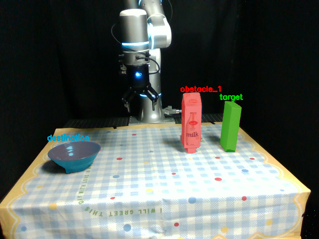

html
Autonomous Manipulation and Obstacle Avoidance on a Real Robot Arm · Rui Wu
Skip to projects
Autonomous Manipulation and Obstacle Avoidance on a Real Robot Arm
Both projects were carried out during my internship at the Safety Control Technology Research Center, Tsinghua University. I contributed to two papers on safety control for embodied intelligence and, building on that research, designed and implemented experimental systems for a real robot arm. From VR demonstration interfaces, data collection and processing, and model fine-tuning to obstacle-avoidance integration, real-robot reinforcement learning, and experimental evaluation, I independently completed the system development, algorithm deployment, and real-robot validation for both projects.
Rui Wu
wurui011223@163.com
Autonomous execution from text instructions
Enter a task instruction
Camera images + robot state
VLA generates actions
Selected method adjusts actions
Robot executes and observes again
A VLA (vision-language-action model) converts camera images, task text, and robot state into actions. Except for the comparison before fine-tuning, all autonomous manipulation demonstrations on this page use base policies that I fine-tuned from OpenPI’s π0.5 Base (pi05_base) using real-robot demonstration data.
For example, enter “Pick up the cup and place it in the bowl.”
Static Obstacles · Learned Avoidance
Following the residual-learning approach in VLSA-RL, I used GRPO (Group Relative Policy Optimization) to train a small action-correction network under CBF (Control Barrier Function) obstacle-avoidance constraints. The base VLA remains frozen, and both training and evaluation take place on the real robot.
Following the approach in CRISP (risk-aware optimization using previews of subsequent actions), the system combines estimates of the dummy hand’s motion with the robot’s subsequent actions to predict proximity risks and adjust motion in advance, with a CBF check before execution. This project does not train a residual network.
CBF + CRISP · Paper Cup Grasping, Dynamic Obstacle Avoidance, and Placement
25
Real-robot GRPO policy updates
315
Demonstration trajectories
31,780
Demonstration frames
10% → 60%
Safe success rate before and after GRPO training · 20 trials each
01 / Static Obstacles · Residual Learning
Project One · Learning to Avoid Static Obstacles
Co-authored paper
VLSA-RL: Can a Small Residual Policy Enable Safety-Aware VLA Adaptation?
Songqiao Hu, Zeyi Liu,
Rui Wu
, Jinjia Chen, HO WUN ZENG, Wei Geng, Yingjian Zhang, Xiao He
ICLR 2027 · Rebuttal Stage
VLSA-RL investigates how a vision-language-action model with existing grasping capabilities can balance operational safety and task success near obstacles. A CBF can correct unsafe actions, but a frozen base model does not learn obstacle avoidance from those corrections, and repeated intervention may interfere with grasping and placement. The paper trains a small residual network through reinforcement learning to adjust the base actions so that they better satisfy safety constraints while continuing to complete the task, without retraining the entire base model.
Following this approach, I designed a box-grasping experiment in which the robot follows a text instruction to carry a brown cardboard box around a milk carton and place it in a bowl. The real-robot system integrates visual localization, action residuals, and CBF filtering into one execution pipeline, while handling coordinate frames, action scaling, and control timing. The residual policy learns directly from task completion and collision feedback during physical operation.
The experiments compare VLA-only execution, the addition of CBF filtering, early-stage residual-policy training, and performance after GRPO training.
The fine-tuned VLA directly executes the box-grasping task without an obstacle-avoidance algorithm. In the video, the gripper moves straight toward the target box without going around the milk carton, then knocks the carton over.
Collision Clip · Milk Carton Knocked Over
VLA Only · Full Execution
02
CBF · End-Effector Avoidance and Payload Collision
CBF filtering is added to the base VLA to address collision risks as the gripper approaches the milk carton. In the video, the end effector can move around the obstacle, but a collision still occurs while transporting the grasped box. This implementation models only the gripper’s collision geometry and does not include the grasped box in the avoidance constraints. Considering gripper avoidance alone is therefore insufficient to ensure safety throughout transport.
Collision Clip · Box Collides with Milk Carton
CBF Only · Full Execution
03
Early Training · Grasping Failure and Stalled Transport
To improve transport with a payload, a learnable residual policy is inserted between the VLA and CBF. Early in training, action adjustments can disrupt grasping position, orientation, and subsequent placement. The following two videos show a grasping failure and stalled transport, respectively. In the first, the gripper knocks the target box over instead of picking it up. In the second, the robot repeatedly adjusts its pose in midair after passing the obstacle and fails to complete placement. These behaviors reveal shortcomings in grasping precision and task continuity during early training. The residual policy must learn obstacle avoidance while preserving the existing grasping capability and continuing through transport and placement.
Grasping Failure
The grasp fails as the gripper knocks the box over instead of picking it up.
Grasping Failure · Gripper Fails to Pick Up the Box
Early Training · Grasping Failure
Stalled Transport
The box has been lifted and carried past the obstacle, but repeated adjustments in midair prevent placement.
Transport Clip · Repeated Adjustments in Midair
Early Training · Stalled Transport
04
After GRPO Training · Collision-Free Grasping and Placement
GRPO is then used to repeatedly collect trajectories, evaluate outcomes, and update the residual policy on the real robot, while the base VLA parameters remain frozen. In the post-training video, the robot approaches and grasps the box, carries it past the milk carton, and places it in the bowl without any collision.
Transport Clip · Clearing the Obstacle and Placing the Box
After GRPO Training · Full Execution
Real-Robot Training and Independent Evaluation
25
Effective policy updates
200
Trajectories used in effective updates (calculated from the configuration)
8 per group
Real-world interaction trajectories
GRPO derives its learning signal from differences in outcomes within a group of real-world interactions. In each round, the current policy tries different actions, rewards are calculated from task completion and collisions, and the residual network is updated before further collection.
In each round, the current residual policy is held fixed while 8 real-world interaction trajectories are collected under the same task configuration, with the scene reset after each run. Residual sampling produces different action attempts, while the CBF handles obstacle constraints during execution.
After collection, outcomes are labeled according to task completion and collisions, and rewards are calculated. Each trajectory’s reward is compared with the group mean to obtain a relative advantage. This project retains groups that contain both safe successes and other outcomes, with variation in rewards. Groups with no safe successes, only safe successes, or no reward variation are excluded from updates. These are the training selection rules used in this project.
All 8 trajectories in an accepted group contribute to learning, rather than retaining only successful trajectories. Based on within-group relative advantages, GRPO increases the probability of actions associated with better outcomes and decreases that of actions associated with poorer outcomes, while using a clipped objective to limit each update. Training also includes an auxiliary CBF projection-deviation term to encourage residual outputs to be closer to the actions produced by safety filtering. Only the residual network is updated throughout this process.
After an update, the updated policy is saved and the next group of real-world trajectories is collected. Groups that fail the selection criteria are skipped, and collection continues with the current policy, so subsequent learning is based on new feedback from the real environment.
The update records contain 29 batches, of which 25 resulted in policy updates and 4 were skipped. The final policy selected was update25. With 1 group per effective update and 8 trajectories per group, the recorded configuration gives 200 training trajectories used in effective updates. Skipped batches and independent evaluation are excluded from this count.
Before Training · update0
10%
Safe successes 2 / 20
→
After Training · update25
60%
Safe successes 12 / 20
Independent evaluation used the update0 and update25 model weights, with 20 trials each. The proportion of trials completing grasping and placement without collision increased from 2/20 to 12/20. Both groups used the residual policy and CBF, comparing system performance before and after GRPO training.
Control and Training Pipeline
Freeze the base policy and learn small action adjustments
VLA generates base actions
Read images and robot state
Residual policy adjusts actions
Base actions + learned residual
Execution-level CBF handles constraints
Modify end-effector velocity when needed
Robot executes
Record task completion and collisions
My Work on the Real-Robot System
Integrated the frozen VLA, residual policy, and execution-level CBF with Rizon 4, aligning coordinate frames, action scales, and gripper commands.
Implemented grouped sampling, outcome labeling, group selection, and policy updates, and organized scene resets, repeated data collection, and independent evaluation in the real environment.
Recorded base actions, residuals, and actual commands separately to analyze post-training behavior and failure causes.
Static Scene Recognition and Gripper Measurement
At startup, the system identifies the milk carton, target box, and destination bowl, and collects depth information in the gripper region as input for 3D modeling. The images below come from different initialization steps in the same experiment, rather than successive processing stages of a single frame.
01 Scene Recognition and Segmentation
Distinguish the obstacle, grasping target, and placement region, and obtain an image segmentation for each object.

02 Gripper Segmentation and Depth Sampling
Segment the gripper region and sample points with valid depth to provide input for gripper geometry measurement and fitting.
02 / Dynamic Obstacles · Predictive Optimization
Project Two · Predictive Avoidance of Dynamic Obstacles
Co-authored paper
Beyond the Executed Prefix: Risk-Aware Full-Chunk Optimization for Robotic Manipulation
Project One addresses static obstacles, while Project Two introduces a moving dummy hand into a grasping task. The method is based on CRISP, which uses previews of subsequent actions to predict risk and optimize obstacle avoidance. Of the action sequence predicted by the VLA, only the first few actions are executed initially, but the remaining actions can still be used to assess future risks. This preview allows the system to adjust motion before the robot and dummy hand move closer together.
Following this approach, I implemented 3D localization and motion estimation for the dummy hand, aligned obstacle predictions with robot action predictions, and integrated them with asynchronous optimization and command execution. CRISP provides predictive obstacle avoidance, while the CBF uses the current 3D geometry and the hand’s motion state to check whether the outgoing action satisfies the avoidance constraints. The base VLA continues to provide grasping and placement actions.
In these tests, as the dummy hand enters the scene and approaches the robot, the VLA-only system continues along its task path without taking evasive action in response to the hand, ultimately colliding with it. The front and oblique-front videos show different tests.
Collision Between Dummy Hand and End Effector
VLA Only · Front View
VLA Only · Oblique-Front View
02
CBF + CRISP · Predictive Avoidance and Task Execution
With CRISP, the robot adjusts its motion as the dummy hand approaches and continues to complete placement after the hand is withdrawn. The clip below highlights the avoidance motion, while the full videos retain the grasping, avoidance, and placement sequence.
Avoidance Clip · Approaching Hand and End-Effector Adjustment
Execution involves prediction, optimization, and checking. CRISP adjusts actions based on future proximity risks, and the CBF checks whether the command about to be sent satisfies the current constraints.
Predict Risk
Remaining action sequence + hand motion estimate → future proximity
Align the robot’s predicted motion with the hand’s short-term trajectory to assess proximity risks over subsequent actions, rather than considering only their current positions.
Adjust in Advance
CRISP optimizes the action sequence → extract the action to execute now
Reduce predicted risk while preserving the original task actions as much as possible, allowing the robot to adjust its motion before approaching the hand.
Check Before Execution
Latest state + proposed action → CBF check → send command
Using the current model gap between the end effector and the hand, the hand’s estimated motion, and the proposed action, the CBF checks whether their closing speed satisfies the barrier-function constraint. The action is retained if it passes the check; otherwise, a correction is solved for within the allowed action bounds. This checks the current action’s effect on the avoidance constraints rather than replanning the entire path around the obstacle.
RGB-D perception continuously updates the hand’s 3D position and motion state. Perception, predictive optimization, and control are scheduled separately. The execution process checks available optimization results against the latest state, connecting advance planning with current-state safety checks.
Predicted Gaps Before and After CRISP Optimization
This figure comes from an actual planning record. Continuing with the original actions gives a predicted model gap of −3.69 mm at the final node, approximately 0.36 seconds into the future. After CRISP optimization, the gap at that node becomes +28.83 mm. The figure shows how optimization changes predicted future proximity from the same state.
Prediction nodes
7
Computation time
23.69 ms
SQP iterations
3
The horizontal axis shows future time measured from the planning instant, and the vertical axis shows the predicted model gap. Both curves come from the same planning calculation and do not represent measured motion trajectories.
Shared Experimental Foundation
Experimental Foundation · Demonstration Collection and VLA Fine-Tuning
Both projects share the demonstration, data-processing, and model fine-tuning pipeline I developed. A base policy capable of grasping and placement from text instructions is established first, followed by residual reinforcement learning in static scenes and predictive obstacle-avoidance experiments in dynamic scenes.
01 VR Demonstrations and Dual-Camera Recording
Meta Quest 3 controllers are used to operate the robot’s end effector and gripper, manually performing approach, grasping, transport, and placement. The front camera records the tabletop and target, while the wrist camera captures the local grasping process.
Open-Source VR Projects and Adaptations
xiaoxiaoxh / TactAR_APP provides the Meta Quest 3 headset application for acquiring and transmitting controller poses and button states.
xiaoxiaoxh / vr-teleoperation served as a reference during the initial investigation of teleoperation approaches and coordinate mapping.
Building on these open-source tools and reference implementations, I adapted the Rizon 4 control interface, action scales, and coordinate mappings, and implemented synchronized recording of dual-camera images and robot state, trajectory storage, and training-data conversion.
Each demonstration is stored as an HDF5 episode containing both RGB streams, robot state, gripper feedback, action commands, and timestamps. Task text is saved with the trajectory for subsequent language-conditioned training.
VR Teleoperation System
Paper Cup Grasping Demonstration
02 Demonstration Dataset and Data Processing
Demonstration data
Total trajectories
Total frames
Recording frequency
Tabletop grasping and placement
315
31,780
15 Hz
The demonstrations cover grasping and placement of paper cups, cardboard boxes, and other objects, totaling 315 trajectories and 31,780 frames, including task demonstrations and supplementary recordings. They are used to fine-tune the base model and are recorded separately from subsequent reinforcement-learning interactions.
Raw episodes are converted to LeRobot v2.1 format, with current observations paired with subsequent actions according to their timing, while preserving task labels and trajectory boundaries. Temporal continuity is checked during conversion, and recordings are split around unusable intervals to avoid stitching states and actions across gaps into a continuous demonstration.
Each input step includes front-camera RGB, wrist-camera RGB, end-effector pose, and gripper state. Actions consist of 3D translational velocity, 3D rotational velocity, and a gripper command. Coordinate frames, rotation representations, and gripper ranges are aligned so that the training data and deployment interface share consistent semantics.
03 Supervised Fine-Tuning of π0.5
The base model weights are from Physical Intelligence π0.5 Base (OpenPI, pi05_base) . LoRA fine-tuning uses real-robot demonstrations, with task text, dual-camera images, and robot state as inputs and demonstrated action sequences as supervision. Subsequent autonomous grasping experiments use the fine-tuned model weights.
LoRA is applied to the vision-language backbone and action expert to train adaptation parameters. The model outputs action chunks of 10 steps, and its normalization and action-scaling settings are used together with the model during real-robot inference.
04 Text Instructions and Autonomous Execution
At deployment, a task instruction is provided, and the VLA continuously reads both cameras and the robot state to generate subsequent actions. The control process converts normalized actions into end-effector motion and gripper commands, updating the actions as new observations arrive.
The following comparisons first examine paper cup grasping before and after fine-tuning, then evaluate performance with distractors, different targets, and different placement locations.
Before and After Fine-Tuning · Paper Cup Grasping
Before fine-tuning, the robot’s motion clearly deviates from the task. The end effector moves upward, away from the paper cup on the table, and fails to approach or grasp the target. In this experimental setup, the general pretrained model cannot directly perform the paper cup grasping task. It requires adaptation of camera observations, robot state, and action interfaces, together with real-robot demonstrations to learn the corresponding operation.
The real-robot demonstrations establish the relationship between images, text, robot state, and appropriate actions in this setting. After data adaptation and fine-tuning, the robot can approach the paper cup, grasp it, and place it in the bowl.
Before Fine-Tuning · Paper Cup Grasping Not Completed
After Fine-Tuning · Paper Cup Grasping and Placement
Multi-Object Scenes · Selecting the Target and Placement Location from Instructions
Multiple non-target objects are added to the table as distractors, while the grasping target and bowl location are also changed. The two videos instruct the robot to grasp a paper cup and a cardboard box, respectively. The model must select the target from the text, grasp it among the distractors, and then locate the bowl in the current image to place the object.
Target · Paper Cup
Target · Cardboard Box
Experimental Hardware and Base Model
Robot arm
Flexiv Rizon 4, 7 degrees of freedom; Flexiv RDK 1.9
Offline kinematic analysis also uses the Rizon 4 kinematic parameters, joint limits, and robot description files from the official Flexiv flexiv_description repository, including
default_kinematics.yaml
and
joint_limits.yaml
. Forward kinematics and Jacobian matrices are computed from these parameters to analyze robot configurations and motion issues in the experiments; this is not an additional online obstacle-avoidance module.